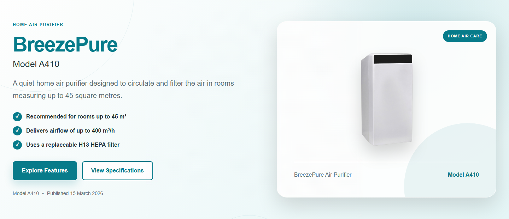

Three-stage filtration
Air passes through a washable pre-filter, an H13 HEPA filter and an activated-carbon layer before returning to the room.

Credentials applied with: Adobe Content Authenticity
Asset type: PNG image with embedded Content Credentials
Credential location: Embedded in the asset file
Last verification: Passed on 28/11/2026 using Content Credentials Verify
Verify Content CredentialsCredentials applied with: Adobe Content Authenticity
Asset type: PNG image with embedded Content Credentials
Credential location: Embedded in the asset file
Last verification: Passed on 28/11/2026 using Content Credentials Verify
Verify Content CredentialsCleaner air for everyday spaces
AeroVale BreezePure A410 is a home air purifier recommended for enclosed rooms measuring up to 45 square metres.
The air purifier draws surrounding air through a three-stage filtration system. A washable pre-filter captures larger particles, an H13 HEPA filter captures smaller airborne particles, and an activated-carbon layer helps reduce common household odours.
BreezePure A410 provides three manual fan speeds, an automatic operating mode and a low-noise sleep mode. Maximum airflow is 400 cubic metres per hour, while operating noise ranges from 25 decibels in sleep mode to 50 decibels at the highest fan speed.
Product highlights
BreezePure A410 combines room-scale airflow, replaceable filtration and straightforward controls in a compact home appliance.
Air passes through a washable pre-filter, an H13 HEPA filter and an activated-carbon layer before returning to the room.
Maximum airflow of 400 m³/h supports routine air circulation in enclosed rooms measuring up to 45 m².
Sleep mode reduces fan speed and operating noise to approximately 25 dB while dimming the control-panel lights.
An integrated particle sensor allows automatic mode to adjust the fan speed in response to detected airborne particles.
A control-panel indicator alerts the user when the installed filter has reached its scheduled replacement interval.

Designed for home use
Place BreezePure A410 on a stable, level surface with sufficient space around the air inlet and outlet. Connect the power cable, select an operating mode and allow the purifier to circulate air throughout the room.
Remove the protective packaging from the filter before first use and reinstall the filter securely.
Choose from three manual speeds, automatic mode or sleep mode according to the room and time of day.
Clean the pre-filter regularly and replace the combined filter when the filter indicator appears.
Recommended room coverage
BreezePure A410 is recommended for enclosed rooms with a floor area of up to 45 square metres under normal household conditions. Open doors, high ceilings and continuous outdoor-air entry may reduce effective room circulation.
Product details
Key product information for the AeroVale BreezePure A410 air purifier.

| Product name | BreezePure |
|---|---|
| Model | A410 |
| Product category | Home air purifier |
| Recommended room size | Up to 45 m² |
| Maximum airflow | 400 m³/h |
| Primary filter | Replaceable H13 HEPA filter |
| Filtration stages | Pre-filter, H13 HEPA filter and activated carbon |
| Operating noise | 25–50 dB |
| Operating modes | Low, medium, high, automatic and sleep |
| Rated power | 55 W |
| Product dimensions | 270 × 270 × 520 mm |
| Product weight | 6.2 kg |
| Product code | AV-A410-2026 |
Getting started
Complete the following steps before and during normal operation.
Open the filter compartment, remove the protective packaging from the filter and reinstall the filter securely.
Place the purifier upright on a stable surface and leave at least 30 cm of open space around the air inlet and outlet.
Connect the power cable and select a manual fan speed, automatic mode or sleep mode from the control panel.
Clean the pre-filter regularly and replace the combined filter when the filter-replacement indicator appears.
Important information
Follow these precautions when operating, cleaning or storing BreezePure A410.
Disconnect the purifier, clean the exterior and store the unit upright in a cool, dry indoor location. Protect the air inlet, outlet and power cable from dust, moisture and physical damage.
Questions and Answers
Find answers about BreezePure A410, including room coverage, airflow, filtration, operating noise and routine maintenance.
BreezePure A410 is recommended for enclosed rooms measuring up to 45 square metres under normal household conditions.
BreezePure A410 is manufactured and distributed by AeroVale.
BreezePure A410 delivers a maximum airflow of 400 cubic metres per hour when operating at its highest fan speed.
The purifier uses a washable pre-filter, a replaceable H13 HEPA filter and an activated-carbon layer.
Operating noise ranges from approximately 25 dB in sleep mode to 50 dB at the highest fan speed.
No. The H13 HEPA and activated-carbon filter should not be washed. Replace the combined filter when the replacement indicator appears.
![Home Management. Practical Household Organization Ideas. Reliable household management depends on information being easy to locate and routine responsibilities being clear. These ideas focus on records, storage reviews and practical planning methods that can support a range of household arrangements without requiring complex systems. Household Records. Organize Important Documents. Separate active documents from long-term records. Current correspondence and forms requiring action should not be stored with archived receipts or completed paperwork. Use clear folder names based on purpose rather than vague labels. A consistent naming system makes both physical and digital records easier to search. Review stored records periodically and remove unnecessary duplicates. Sensitive documents should be disposed of appropriately rather than placed directly into general household waste. Storage Review. Assess Existing Storage Methods. Examine whether containers, shelves and cupboards still match the items stored inside them. Household needs often change while storage arrangements remain unchanged. Move frequently used categories to accessible positions and transfer occasional items to secondary locations. This preserves convenient space for everyday use. Standard containers can make shelves easier to manage, but container size should reflect actual contents rather than appearance alone. Weekly Planning. Maintain Focused Checklists. Organize weekly checklists by location or responsibility rather than creating one uninterrupted list. Grouped tasks are easier to complete efficiently. Distinguish required activities from optional improvements. This prevents lower-priority tasks from distracting attention from essential work. Carry forward only unfinished tasks that remain relevant. Repeatedly copying an unnecessary item makes the checklist longer without improving household management. Space Assessment. Evaluate Room Arrangements. Review how people move through each room and where everyday items naturally accumulate. These patterns reveal where additional storage or layout changes may be useful. Ensure entrances, pathways and frequently used furniture remain accessible. Decorative arrangements should not interrupt the normal use of the room. Consider whether unused furniture could serve another area or be removed. Additional open space may be more useful than retaining every available item. Classification. Use Consistent Categories. Consistent categories allow household members to understand where items belong without relying on individual memory. Categories should be broad enough to remain practical. Use the same terminology on containers, lists and digital records. Different labels for the same type of item can create unnecessary confusion. Review categories when a container becomes overcrowded or consistently empty. Storage labels should describe current contents rather than an older arrangement. Maintenance Records. Track Completed Home Activities. Recording completion dates can help households remember infrequent activities without relying on estimates. A simple date and short note are often sufficient. Keep supporting information, such as service records or purchase documents, in a related folder rather than scattered across several locations. Update the record immediately after completing an activity. Delayed entries are more likely to contain missing or inaccurate details. Daily Efficiency. Simplify Repeated Household Actions. Observe tasks that require repeated movement, searching or setup. These steps may indicate that supplies are stored too far from their point of use. Adjust one repeated process at a time. Relocating a small group of items may improve efficiency without disrupting the rest of the household system. Evaluate the change after normal use. If the new arrangement creates another difficulty, refine it rather than keeping an ineffective system for consistency alone.](../../Assets/image/a7m2p-1-home4-3.png)
Credentials applied with: Adobe Content Authenticity
Asset type: PNG image with embedded Content Credentials
Credential location: Embedded in the asset file
Last verification: Passed on 28/11/2026 using Content Credentials Verify
Verify Content Credentials